呂清夫 撰文
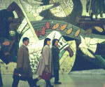
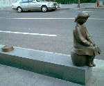
距離日本東京四十分鐘車程的立川市便是這樣的一個藝術城（見右圖），車站本身固然重視裝飾，一出車站更可感覺道濃郁的藝術氣氛。立川市本是個航空基地﹐曾有美軍駐防﹐等到美軍撤防以後﹐當地即著手開發為商業區﹐其總建築費高達三十億美元。然在完工的前三年﹐主其事者突發奇想﹐希望營造一個高品味的格調﹐以便招徠更多的商家與住戶﹐於是才動用了要求曲高和眾的公共藝術﹐並以一千萬美元作為公共藝術的經費。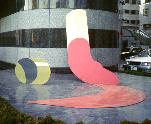
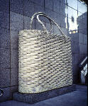
日本人喜歡編寫百科全書、全集、或大系﹐每一出書常令人歎為觀止。這次在立川市的公共藝術上﹐我們又看到了異曲同工的喜好﹐因為他們在一個社區之中﹐居然設置了九十二位藝術家的一○九件作品﹐而且企圖囊刮所有的當代藝術。所以你只要到此一遊﹐便可以看到當代藝術的萬花筒。走馬看花需要一個半小時﹐慢慢看最少需要三小時。這些作品的藝術家包括四十三個日本人、十個美國人﹐法國、德國、西班牙各三人﹐其他大國多半有一、兩人。第三世界包括中國大陸、新加坡、泰國、印度、澳洲、黎巴嫩、以色列、辛巴威、奈及利亞、塞內加爾、烏拉圭、阿根廷、古巴、海地……﹐也都各有一人，可惜就是沒有台灣作品！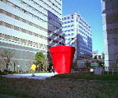
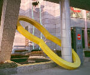
在這批作品中﹐總共三十六個國家的作品幾乎沒有例外，多半屬於普普藝術及其類似作品，媒體學者麥克魯漢(Marshall McLuhan)所揭櫫的「地球村」似乎使人忘卻了所謂民族風格。由於普普藝術取材於通俗的日用品，手法上又能做得相當逼真，故對大眾具有莫大的吸引力，同時有些小東西常被作成奇大無比，常能給人以意外的驚奇，或與未知的邂逅，這也是普普藝術的特徵之一。日本人的作品固然如此﹐美國人歐登堡(C.Oldenberg)的「口紅」亦復如此（見右圖），新加坡人唐大吾（音譯）更顯示了很典型的普普風味﹐他把一個菜籃作得有半面牆那麼大﹐真是出人意表（見左圖）。 同樣的﹐法國人雷諾(Jean-Pierre Raynaud)也在此地製作了一個巨無霸的血紅大花盆（見右圖）。如是大花盆用作露天咖啡座﹐大菜籃都是當地的通風口。而通風口與車阻可以說是立川公共藝術最常見的功能。另外﹐有些作品可以當椅子﹐而更多的作品則是歡迎你觸摸。這些實用藝術品相當多樣，如伊藤誠的通風口雕塑像個套環（見左圖），法國人妮奇(Niki de Saint Phalle)的長椅則非常豔麗。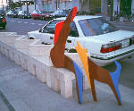
二、藝術與人生竟是如此的接近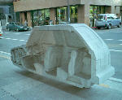
在這批作品中﹐有趣的是一些生活化的作品﹐如西班牙人雅巴達妮（Esther Albardane）的作品是狗咬屁股﹐或人狗對話（見左圖）﹐山本正道的作品像是小女孩生悶氣﹐作品中的「人」都坐在路邊長椅上﹐你也可以坐在「他（她）」們之旁﹐觀其喜怒哀樂﹐「他（她）」們與你同高﹐跟你同樣過當下的生活﹐你會覺得藝術與人生竟是如此的接近！常作表演、觀念藝術的亞康西(Vito Acconci)也製作了一件似乎是反車情結的石雕汽車﹐但車子被鋸成一半﹐從車道看不過是路邊停車﹐從人行道上看則車子已經肚破腸流﹐並凍結為一塊頑石（見右圖）。還有﹐西雅秋的廢樹幹﹐乍看似乎是垃圾﹐踢它一腳卻鏗然有聲﹐原來是可以亂真的青銅作品。這兩件作品就放在路旁﹐兼作長椅與車阻。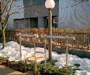
整體看來，觀念性的作品亦為數不少﹐如澳洲人華拉馬內許(Hossein Valamanesh)竟把自己所用的椅子與所看的書本鑄成青銅﹐然後搬到路邊去﹐乍看好像為了霸佔車位﹐其實是要做車阻﹐他還把自己的影子印在路面上﹐簡直是把自己的日常生活搬上馬路﹐造成藝術品才能見到的另類空間。又如美國的柯斯士(Joseph Kosuth)認為藝術是先驗的、分析的、語言的東西﹐他最近還不客氣的指出﹐後現代的流行藝術乃是市場取向的開倒車行為。因之﹐他的作品是替地下停車場刻上「碑文」﹐讓觀眾去感受何謂藝術。美國人包洛夫斯基(Jonathan Borofsky的「提公事包的人」本是一個影子的造形，但是當它本身又拖著另外一個影子時，便顯得相當有趣。再如瑞士的華利尼(Felice Varini)則跟觀眾玩遊戲﹐因為他的三件作品都只能在某一個定點看到正圓﹐稍稍偏離定點﹐圓形便告崩潰。這批作品還有一些是會動、會響、會亮的東西﹐如勞森白（R.Raushenberg）的腳踏車造形是用霓虹燈作成的﹐希臘人安托納科斯(Stephen Antonakos)的四件作品也都是霓虹燈﹐這類作品亮不亮有關係﹐不亮不動時可能形同廢物﹐故屬於觀念性的作品。法國IFP藝術群的作品則是街燈﹐但當華燈初上﹐其照明本身反而顯現了亮麗的藍天白雲﹐令人稱奇。但是在立川最有趣的恐怕要算會響的作品﹐如藤本由紀夫的「耳朵椅子」（見左圖）讓你碰到眼睛看不到的東西﹐當你坐在作品上時，耳朵會碰到左右兩個聽筒，讓你在都市中聽到天籟。牛島達治的作品是「古典通信器具，傳聲筒」，它會告訴你「風的聲音是什麼顏色？」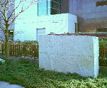
三、人不親土親的藝術 立川的公共藝術在求新之中不失穩健﹐既沒有守舊的雕塑﹐但也看不到流行的作品。也許大家對於模仿無罪、抄襲有理、什麼都好(anything goes)的後現代作品已經看膩了。孤立於晚近的流行作品之中﹐被評論家視為「獨行俠」的德國人呂克廉(Ulrich Ruckriem見圖)倒是有一件石雕作品側身其中。雖然安置在不顯眼的西北角﹐但在整體的印象中﹐它還是相當醒目﹐在花團錦簇的作品群中﹐只有這件作品最樸實、最簡潔、可能也最有力量。筆者去看這件作品時﹐適逢春雪初融﹐頓生松柏後凋之感（見右圖）。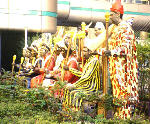
不過這批作品也有脆弱的一面﹐例如「商業中心大樓」前面街道兩旁的將近二十件作品便相當小兒科﹐每一件都必須蹲下來看才行﹐有點聊備一格。企劃案本來似乎有意將世界各地的原住民文化挖掘出來﹐所以藝術家之中加拿大人貝爾摩兒(Rebecca Belmore)、美國人德罕（Jimmie Durham）都是原住民﹐德罕造訪立川的時候還對當年駐日美軍留下的鱗爪感慨良多。 這些作品在技巧上也企圖挖掘本土技法﹐如塞內加爾人索烏 (Ousumane Saw) 便運用乾漆的技法﹐然其具象作品實在很差。奈及利亞人雅克班(S.Jack Akpan)的酋長群像則用沙模去灌水泥漿﹐分別灌好背部與腹部﹐然後組合起來著色而成（見左圖）。他在自己國內有很多人請他塑這種像﹐等這些人死後﹐這些水泥像就被安置在墳墓上。不過他的塑像到頭來卻頗像「麥當勞叔叔」一般，這是普普藝術的趣味，也是它的侷限。另外﹐有些作品由於實用性的考量﹐常常融入建築或空間之中﹐而難以分辨「牛肉在哪裡」﹐如美國人沃森(Cherles Worthen)的四件灑水拴蓋屬之﹐但是如果處理得當﹐能在環境與藝術之間找到平衡點則是公共藝術的理想﹐亦即作品雖因融入環境不特意凸顯自我﹐卻仍不失其藝術性﹐所謂不著一字盡得風流正是此意。至於最低階的使用現成藝術品則是公共藝術的現實﹐也就是還沒有跳出純粹藝術的框框，不過是把原來放在室內的作品搬到外面來。日本都市設計學者國吉直行認為這是日本公共藝術的通病﹐可知公共藝術設置之不易﹐我們需要學習的還很多。 四、藝術的啟蒙運動 立川整批作品的企劃案係由公開徵件而產生﹐最後由東京藝大畢業的畫廊業主北川氏在五個角逐者中脫穎而出。企劃人並說「街道是由居住或活動於此地的人持續創造的空間﹐我希望這個地區發展成『創造場域』（a place of creation）而迎向未來。」所以整個區域叫做Faret Tachikawa﹐所謂Faret是他們杜撰的字眼﹐語源來自義大利文中意謂著「製作、創造」的Fare﹐後面加t則取自Tachikawa（立川）的字首。只是理想歸理想﹐現實則是另一回事。當市民買下當地的房產以後﹐不但沒有在「持續創造」這個場域﹐反而要推卸公共藝術的保養工作﹐甚至還否認公共藝術的必要性。最後還是由商家出面﹐出錢出力維護這些可能帶來商機的藝術品。策劃人表示﹐民眾了解公共藝術的重要估計需要五年的歲月。該公共藝術開放於一九九四年﹐但是三年後筆者造訪該地時﹐發現當地人士竟無人知道有什麼公共藝術的存在﹐我問遍了非流動性的警察、店員、車站人員﹐結果都說莫宰羊。這不能不說是公共藝術的盲點﹐值得我們警惕。也許﹐正因為民眾還不很了解公共藝術﹐所以更需要百科全書式的戶外作品﹐而歷史上的百科全書本來就有啟蒙思想在裡面﹐在此﹐整個企劃案也不妨說是公共藝術的一種啟蒙運動了﹐這樣的企劃案與作品群對台灣來講，委實具有相當的借鏡價值。